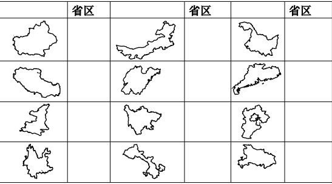
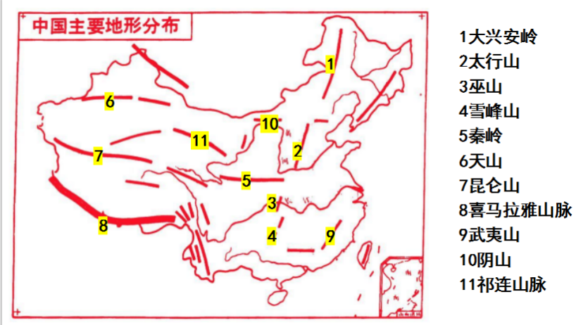
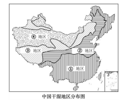
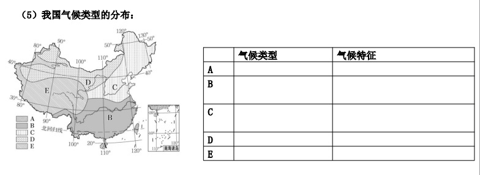
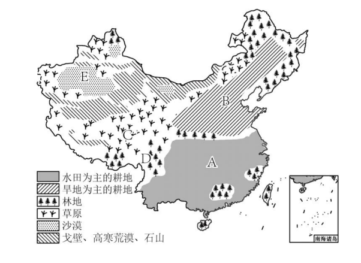

1地理位置及其优越性
纬度位置：北回归线穿过中国南部，大部分位于北温带，南部小部分地区位于热带，没有寒带
海陆位置：位于亚欧大陆东部，东临太平洋，海陆兼备
纬度位置优越性：光热条件好，有利于农业生产和人们的生活
海陆位置优越性：海陆兼备，交通便利，有利于发展海洋事业和对外贸易
纬度位置：北回归线穿过中国南部，大部分位于北温带，南部小部分地区位于热带，没有寒带
海陆位置：位于亚欧大陆东部，东临太平洋，海陆兼备
纬度位置优越性：光热条件好，有利于农业生产和人们的生活
海陆位置优越性：海陆兼备，交通便利，有利于发展海洋事业和对外贸易
东西差异：东部乌苏里江晨曦初露时，西部帕米尔高原还是星斗满天 → 东西跨经度广，东西距离长
南北差异：冬季海南岛天气炎热而黑龙江冰天雪地 → 南北跨纬度广
四个海域（自北向南）：渤海、黄海、东海、南海
两大内海：渤海、琼州海峡
增长特点：新生人口显著减少，老年人口比重快速上升，劳动年龄人口比重下降
基本国策：计划生育
分布特点：东南部人口稠密，西北部人口稀疏（东密西疏）
人口地理界线：黑河—腾冲一线
对应原稿第 7 题 · 点击图片可放大，点击下方卡片翻转查看答案

地形类型齐全，山区面积广大
地势西高东低，呈现三级阶梯
多分布在阶梯交界处
原因：阶梯交界处河流落差大，水流急，水能资源丰富；河流流量大
第一、二级阶梯：昆仑山脉、祁连山脉、横断山脉
第二、三级阶梯：大兴安岭、太行山、巫山、雪峰山
对应原稿第 2 页图 · 图中数字为山脉序号，与下方表格对应

| 序号 | 山脉名称 | 序号 | 山脉名称 |
|---|---|---|---|
| 1 | 大兴安岭 | 7 | 昆仑山 |
| 2 | 太行山 | 8 | 喜马拉雅山脉 |
| 3 | 巫山 | 9 | 武夷山 |
| 4 | 雪峰山 | 10 | 阴山 |
| 5 | 秦岭 | 11 | 祁连山脉 |
| 6 | 天山 | 12 | 横断山脉 |
冬季：南北温差大，自南向北逐渐降低。主导影响因素：纬度因素
夏季：我国大部分地区普遍高温。青藏高原地区气温相对较低，主要影响因素：地形因素
空间分布：从东南沿海向西北内陆递减
时间分配：大部分地区降水集中在夏季；南方雨季长，北方雨季短；年际变化也很大
西北地区降水少的原因：① 深居内陆，距海遥远；② 山脉阻挡了夏季风，受夏季风影响小
| 分界线 | 两侧的干湿地区 |
|---|---|
| 800 毫米年等降水量线 | 湿润区 ↔ 半湿润区 |
| 400 毫米年等降水量线 | 半湿润区 ↔ 半干旱区 |
| 200 毫米年等降水量线 | 半干旱区 ↔ 干旱区 |
气候类型多样、季风气候显著
| 代码 | 气候类型 | 气候特征 |
|---|---|---|
| A | 热带季风气候 | 全年高温，分旱雨两季 |
| B | 亚热带季风气候 | 夏季高温多雨，冬季温和少雨 |
| C | 温带季风气候 | 夏季高温多雨，冬季寒冷干燥 |
| D | 温带大陆性气候 | 冬冷夏热，降水少，温差大 |
| E | 高原山地气候 | 气温随高度变化，垂直差异显著 |
主要有纬度因素、海陆因素和地形因素
| 季风 | 源地 | 风向 | 特点 | 影响 |
|---|---|---|---|---|
| 冬季风 | 蒙古和西伯利亚地区 | 偏北风 | 寒冷干燥 | 加剧我国北方的严寒，加大南北温差 |
| 夏季风 | 太平洋和印度洋 | 偏南风（东南季风和西南季风） | 温暖湿润 | 增温增湿，大部分地区雨热同期 |
有利：季风气候雨热同期，为农业发展提供了有利条件
不利：降水不稳定，主要集中在夏季，而且年际变化大，容易造成旱涝灾害
对应原稿第 3 页图 · ① 湿润区 ② 半湿润区 ③ 半干旱区 ④ 干旱区

对应原稿第 4 页图 · A 热带季风 · B 亚热带季风 · C 温带季风 · D 温带大陆性 · E 高原山地

| 类型 | 补给水源 | 汛期 | 主导因素 |
|---|---|---|---|
| 外流河 | 大气降水 | 夏季 | 夏季降水多 |
| 内流河 | 高山冰雪融水 | 夏季 | 夏季气温高，冰雪融水多 |
问题：水土流失
治理措施：植树造林、建防护林等
| 原因分类 | 存在的问题 | 采取措施 |
|---|---|---|
| 自然原因 | 降水丰沛且集中，水量大 | 修建水利工程，如三峡；裁弯取直 |
| 人为原因 | 上游水土流失 | 建设长江防护林 |
| 中下游围湖造田 | 退耕还林 | |
| 河道淤积 | 疏浚河道、加固大堤 |
| 河段 | 问题 | 形成原因 | 治理措施 |
|---|---|---|---|
| 上游 | 草地退化、土地荒漠化 | 自然：气候干旱，降水少 人为：过度放牧 |
加强生态环境建设，如退耕还草、植树种草 |
| 中游 | 水土流失严重，含沙量大 | 自然：流经黄土高原，土质疏松；夏季降水集中，多暴雨；植被覆盖率低 人为：过垦过牧，植被破坏严重 |
生物措施：植树种草 工程措施：修建梯田，打坝淤地 |
| 下游 | 洪涝灾害 | 进入下游平原，河道变宽，流速减慢，泥沙沉积，河床抬高，形成“地上河” | 疏浚河道，加固大堤，建设大型水利枢纽 |
总量大、种类全、人均不足
耕地现状：耕地紧缺，人均占有量少；适合耕作的土地开垦殆尽，可开垦土地数量少、质量差、开发难度大
南方：水田；北方：旱地
主要成因：降水不同
| 耕地类型 | 所在干湿地区 | 主要地形类型 |
|---|---|---|
| 旱地 | 半湿润区 | 平原、丘陵 |
| 水田 | 湿润区 | 平原、丘陵 |
我国和美国面积相差不大，但人均耕地远远低于美国，原因是：美国平原面积广阔，耕地多；美国人口少于我国
| 字母 | 土地利用类型 | 农业类型 |
|---|---|---|
| A | 水田 | 种植业 |
| B | 旱地 | 种植业 |
| C | 草地 | 畜牧业 |
| D | 林地 | 林业 |
| E | 难以利用土地 | — |
保护要求：针对农业用地、建设用地和生态用地，分别设定保护和开发边界，合理用地、节约用地、保护耕地尤为重要
对应原稿第 6 页图 · A 水田 · B 旱地 · C 草地 · D 林地 · E 难以利用土地

通常把地球上的淡水资源称为水资源。
河流水和淡水湖泊水是我国主要的淡水资源。
| 特点 | 具体表现 | 解决措施 | 工程实例 |
|---|---|---|---|
| 空间分布 | 南丰北缺，东多西少 | 跨流域调水 | 南水北调 |
| 时间分配 | ① 夏秋多，冬春少 ② 年际变化大 | 修建水库 | 三峡水利枢纽 |
把长江流域的水调到华北和西北地区，分为东线、中线、西线三个方案。
利用现状：水资源供应相当紧张，缺水状况日益加重；水资源利用率低，浪费惊人；严重的水污染降低了水资源的可利用价值，进一步加剧了我国的缺水程度
解决措施：节约用水，保护水资源
深居内陆，加上地形对夏季风的阻挡，降水稀少，气候干旱
自然原因：降水少；蒸发旺盛
人为原因：人口稠密，生产生活用水量大；水资源污染和浪费严重